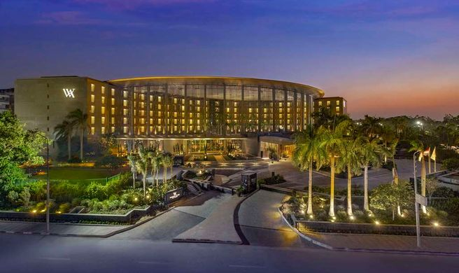

Cairo
Primo contatto con l'Egitto: 4 ore di volo e si atterra nella megalopoli più grande d'Africa. L'imponente Cairo ti accoglie.
✈️ Neos N°1424
🏨 Waldorf Astoria Cairo
🌆 Heliopolis
🎵 Bar Raa Jazz
🍜 Koshari El Tahrir

Waldorf Astoria Cairo Heliopolis
5 stelle nell'elegante quartiere di Heliopolis, a 10 minuti dall'aeroporto internazionale. Costruito nel 1910 come Heliopolis Palace, ospitò re e capi di stato per oltre un secolo. Prima notte egiziana nel massimo del lusso.
★ EXTRA CONSIGLIATI PER STASERA
Nightlife
Bar Raa Jazz
Cocktail esclusivi e live jazz nel cuore di Heliopolis.
💡 Prenotare il tavolo — molto frequentato il weekend.
→ Approfondisci
Cibo
Koshari El Tahrir
Il piatto nazionale egiziano: pasta, lenticchie, riso. Meno di 3 USD.
💡 Locale iconico in Piazza Tahrir.
→ Approfondisci